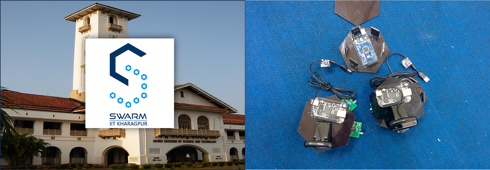
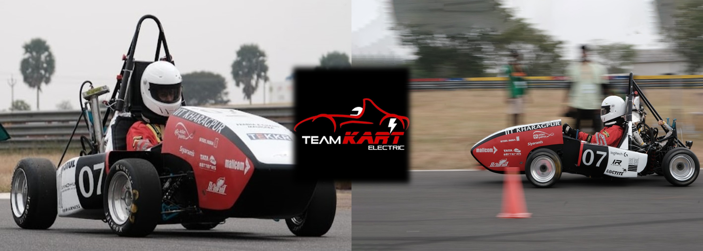
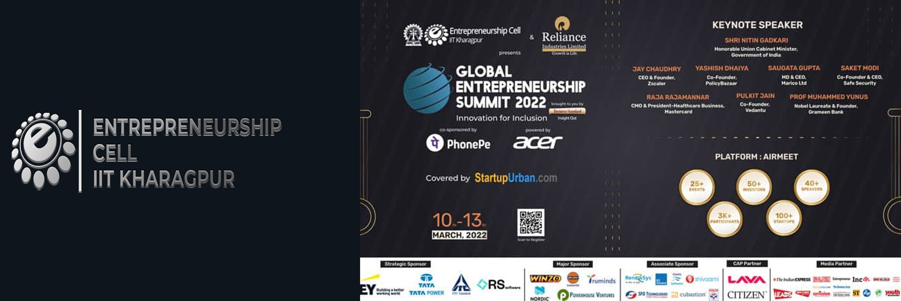

I am Saptashwa Bhattacharjee, a senior undergraduate student in the
Department of Electronics and Electrical Communication Engineering at the Indian Institute
of Technology (IIT) Kharagpur.
I was born on 24th of August 2002 in a small town named Malda in the state of West Bengal,
India. Born in a lower-middle-class family, I heard about the financial crisis, my elders
had to endure. My eldest uncle, an exceptional student received an offer from medical school
for undergraduate studies. However, an intense financial crisis prevented him from seeking admission.
His paramount sacrifice had a profound impact on my development, and his grief to date has made me
recognize the value of education.
I play classical guitar since 2014. I have perfomed live at the All India Radio
in 2018. I have a lot of interest in ragas of indian classical music. My favouite raga is Raga Bhairav.
It is a sampurna raga that is traditionally performed in the morning and also as the beginning piece in
concerts. Bhairav suggests seriousness, introversion and devotional attitude.
I am presently in my final semester at IIT Kharagpur. My ongoing courses are: Nanoelectronics,
Power Management Integrated Circuits, Secure Communications, Sociology of Economics Development,
Design Lab, and Bachelor's Thesis.
Here is my Curriculum Vitae
Position(s) of Responsibility
I served as the Secretary of the Electronics and Electrical Communication Engineering Department Society
in the academic year 2022-2023. In my tenure, I worked with co-members of the society in initiating a blog
series - Corepedia, which aims at guiding students through core internship and placement preparation. I also
acted as the first point of contact in addressing concerns of nearly a 1000 students of the department.
My Campus Involvements
1 / 3

August 2022 - July 2023
I was a member of the Mechatronics Subsystem of Swarm Robotics
Group at IIT Kharagpur. I was assisted by seniors in learning Robot Operating System (ROS), Arduino, control
schemes like Optimal Control and PID Control. We also participated as a team in the International Conference
on Unmanned Aircraft Systems (ICUAS) 2023.
2 / 3

January 2022 - August 2022
TeamKART is the official formula student team of IIT Kharagpur.
I was a member of the electronics subsystem where I learnt about different aspects of cars like types of
suspension, slip angles, caster, camber, toe, KPI and electronic sensors like butterfly sensor, throttle position
sensor, crankshaft position sensor etc. Following this, I focused explicitly on the Battery Management System (BMS)
for the team's future project: Electric Vehicle E15. I also prepared the Failure Mode and Effect Analysis (FMEA) of
E15 in Pi-EV, a FSEV concept challenge, where we won the Engineering Design Event under the Best FMEA Report
category.
3 / 3

January 2022 - May 2022
I served as a member of the Web Team of E-Cell at IIT Kharagpur.
I developed websites for various events of the cell using HTML, CSS and introductory level of JavaScript. We
organized the Global Entrepreneurship Summit 2022, the flagship event of E-Cell. I also took part in the case
study of an early stage startup in the food and beverage industry where parameters such as Total Addressable
Market,ROI, PAT, GC, Net Profit and CM2 was analysed. The sole purpose is to inspire and support startups
emerging from our institute.
I was in the Health & Fitness (H&F) Wing of NSO at IIT Kharagpur from December 2021 to April 2023.
The National Sports Organization (NSO) is a Government of India initiative to promote sports
and athletics among the country's youth. NSO also aims to raise physical awareness among the youth
through activities like yoga, taekwondo, and aerobics. Intramural competitions in sports like carom,
badminton, throw ball, leg-cricket, and athletics are also organized. We used to perform yoga from
6 A.M.to 7 A.M. on Wednesday and Saturday everyweek. On some days we also went on long cycling sessions.
Photo Gallery
1 / 5
With Prof. Frederic Nabki on the last day of Mitacs Internship
2 / 5
Prof. Mrigank Sharad's VLSI Design Group at IIT Kharagpur
3 / 5
At Toronto Harbourfront in July 2024
4 / 5
With my parents and grandparents in front my hall of residence at IIT Kharagpur


 Saptashwa
Saptashwa